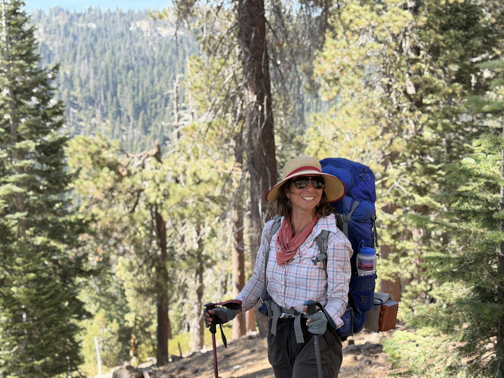

About
Side Quest
We believe some of life's most important lessons happen outside the classroom.
We believe some of life's most important lessons happen outside the classroom.
Side Quest Expeditions was created around a simple idea: young people should have access to meaningful outdoor experiences regardless of their family's ability to pay for them.
We begin close to home, introducing students to the incredible public lands and outdoor spaces surrounding San Francisco. As students gain experience, confidence, and outdoor skills, those opportunities grow into larger adventures including camping, backpacking, rock climbing, and whitewater rafting.
Our goal is not simply to take students outside. We want young people to develop the skills, confidence, relationships, and sense of belonging that allow them to see the outdoors as a place where they belong.
Side Quest Expeditions is guided by a volunteer board and experienced outdoor educators committed to expanding access to meaningful outdoor experiences for young people.

Kyle is an outdoor educator, river guide, and substitute teacher with more than a decade of experience leading people in outdoor environments.
His background includes whitewater rafting, backpacking, rock climbing, challenge course facilitation, outdoor leadership, staff training, and wilderness risk management. He has led programs ranging from local day experiences to multi-week wilderness expeditions.
Kyle holds a degree in Communication with a focus on small-group communication and conflict resolution, as well as formal education in wilderness studies. His work in outdoor education and public schools ultimately led to the creation of Side Quest Expeditions.

Geoff is an outdoor educator and lifelong climber with a background spanning environmental science, experiential education, challenge course facilitation, team building, wilderness guiding, and trail and climbing-area development.
He is passionate about helping people build meaningful connections with themselves, with others, and with the outdoors.
Rumor has it he travels with a hacky sack at all times—just in case civilization breaks out.

Klare serves as Secretary of the Side Quest Expeditions Board of Directors and supports the organization's governance, planning, and continued development.
Our programs are led by experienced outdoor educators and guides who bring technical outdoor skills, risk management experience, and a commitment to creating supportive learning environments.

James has worked in youth development for over a decade and is an experienced practitioner of Qigong. He brings a thoughtful, grounded approach to outdoor education, helping young people build confidence, connection, and a deeper awareness of themselves and the world around them.

Brent is an experienced outdoor educator and guide who brings a passion for adventure, mentorship, and hands-on learning to Side Quest Expeditions. He helps create supportive experiences where students can challenge themselves and grow in the outdoors.

Eli is an outdoor educator with more than a decade of experience working in outdoor and experiential education. He joins Side Quest Expeditions as an instructor, helping students learn, explore, and build meaningful connections through outdoor experiences.

Anna was born and raised in Washington, DC, but comes from a large California family and spent her childhood summers exploring the Sierra Nevada. She led her first backpacking trip in college and has guided a wide variety of programs ever since.
She has worked with people of all ages and backgrounds, from sea kayaking in the San Juan Islands to trekking in the Grand Canyon. Facilitating experiences where participants can connect with others, nature, and themselves has become Anna's life mission.
In her spare time, Anna loves to travel, cook, sing, and practice yoga.
Challenge, reflection, and adventure help students discover their strengths, capabilities, and confidence.
Shared experiences create opportunities for teamwork, communication, trust, and stronger communities.
Understanding the landscapes, communities, histories, and ecosystems around us creates a deeper relationship with the places we explore.